일반기계기사 (2022-04-24 기출문제)
1과목: 재료역학
1. 그림과 같은 부정정보가 등분포 하중(ω)을 받고 있을 때 B점의 반력 Rb는?
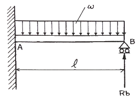
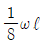
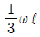
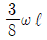
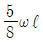
(정답률: 알수없음)

2. 안지름 1m, 두께 5mm의 구형 압력 용기에 길이 15mm 스트레인 게이지를 그림과 같이 부착하고, 압력을 가하였더니 게이지의 길이가 0.009mm 만큼 증가했을 때, 내압 p의 값은 약 몇 MPa 인가? (단, 세로탄성계수는 200GPa, 포아송 비는 0.3 이다.)
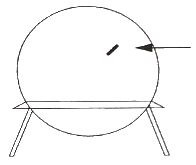
- 3.43 MPa
- 6.43 MPa
- 13.4 MPa
- 16.4 MPa
(정답률: 알수없음)
3. 비례한도까지 응력을 가할 때, 재료의 변형에너지 밀도(탄력계수, modulus of resilience)를 옳게 나타낸 식은? (단, E는 세로탄성계수, σpl은 비례한도를 나타낸다.)
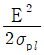
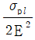
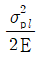
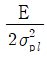
(정답률: 알수없음)
4. 지름이 d인 중실 환봉에 비틀림 모멘트가 작용하고 있고 환봉의 표면에서 봉의 축에 대하여 45°방향으로 측정한 최대수직변형률이 ε이었다. 환봉의 전단탄성계수를 G라고 한다면 이때 가해진 비틀림 모멘트 T의 식으로 가장 옳은 것은? (단, 발생하는 수직변형률 및 전단변형률은 다른 값에 비해 매우 작은 값으로 가정한다.)
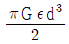
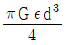
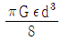
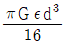
(정답률: 알수없음)
5. 굽힘 모멘트 20.5 kN·m의 굽힘을 받는 보의 단면은 폭 120mm, 높이 160mm의 사각단면이다. 이 단면이 받는 최대굽힘응력은 약 몇 MPa 인가?
- 10 MPa
- 20 MPa
- 30 MPa
- 40 MPa
(정답률: 알수없음)
6. 비틀림 모멘트 T를 받는 평균반지름이 rm이고 두께가 t인 원형의 박판 튜브에서 발생하는 평균 전단응력의 근사식으로 가장 옳은 것은?
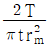
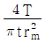
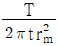
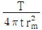
(정답률: 알수없음)
7. 한 쪽을 고정한 L형 보에 그림과 같이 분포하중(w)과 집중하중(50N)이 작용할 때 고정단 A 점에서의 모멘트는 얼마인가?
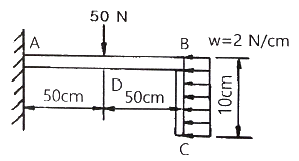
- 2600 N·cm
- 2900 N·cm
- 3200 N·cm
- 3500 N·cm
(정답률: 알수없음)
8. 한 변의 길이가 10mm인 정사각형 단면의 막대가 있다. 온도를 초기 온도로부터 60℃만큼 상승시켜서 길이가 늘어나지 않게 하기 위해 8kN의 힘이 필요할 때 막대의 선팽창계수(a)는 약 몇 ℃-1 인가? (단, 세로탄성계수 E = 200 GPa 이다.)
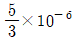
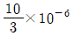
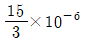
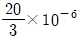
(정답률: 알수없음)
9. 다음 단면에서 도심의 y축 좌표는 얼마인가? (단, 길이 단위는 mm 이다.)
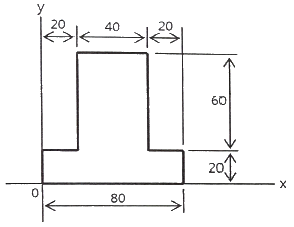
- 32mm
- 34mm
- 36mm
- 38mm
(정답률: 알수없음)
10. 다음과 같은 평면응력상태에서 최대전단응력은 약 몇 MPa 인가?
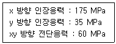
- 127
- 104
- 76
- 92
(정답률: 알수없음)
11. 그림과 같은 사각단면보에서 100kN의 인장력이 작용하고 있따. 이 때 부재에 걸리는 인장응력은 약 얼마인가?
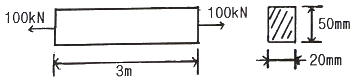
- 100 Pa
- 100 kPa
- 100 MPa
- 100 GPa
(정답률: 알수없음)
12. 그림과 같이 강선이 천정에 매달려 100kN의 무게를 지탱하고 있을 때, AC 강선이 받고 있는 힘은 약 몇 kN 인가?
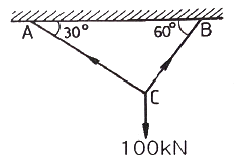
- 50
- 25
- 86.6
- 13.3
(정답률: 알수없음)
13. 양단이 고정된 막대의 한 점(B점)에 그림과 같이 축방향 하중 P가 작용하고 있다. 막대의 단면적이 A이고 탄성계수가 E 일 때, 하중 작용점(B점)의 변위 발생량은?
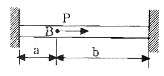
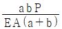
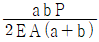
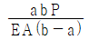
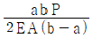
(정답률: 알수없음)
14. 그림과 같은 분포 하중을 받는 단순보의 반력 RA, RB 는 각각 몇 kN 인가?
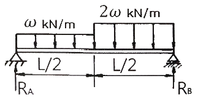
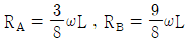
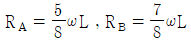
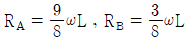
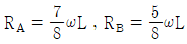
(정답률: 알수없음)
15. 그림과 같이 크기가 같은 집중하중 P를 받고 있는 외팔보에서 자유단의 처짐값을 구한 식으로 옳은 것은? (단, 보의 전체 길이는 ℓ이며, 세로탄성계수는 E, 보의 단면2차모멘트는 I이다.)
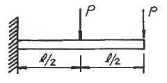
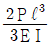
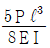
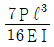
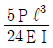
(정답률: 알수없음)
16. 가로탄성계수가 5 GPa 인 재료로 된 봉의 지름이 4cm이고, 길이가 1m 이다. 이 봉의 비틀림 강성(단위 회전각을 일으키는데 필요한 토크, torsional sthffness)은 약 몇 kN·m 인가?
- 1.26
- 1.08
- 0.74
- 0.53
(정답률: 알수없음)
17. 직사각형 단면을 가진 단순지지보의 중앙에 집중하중 W를 받을 때, 보의 길이 ℓ이 단면의 높이 h의 10배라 하면 보에 생기는 최대굽힘응력 σmax와 최대전단응력 τmax의 비(
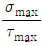
)는?- 4
- 8
- 16
- 20
(정답률: 알수없음)
18. 그림과 같은 단순보에 w의 등분포하중이 작용하고 있을 때 보의 양단에서의 처짐각(θ)은 얼마인가? (단, E는 세로탄성계수, I는 단면 2차모멘트이다.)
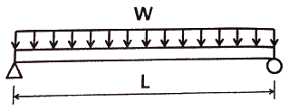
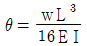
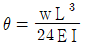
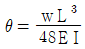
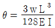
(정답률: 알수없음)
19. 단면적이 같은 원형과 정사각형의 도심축을 기준으로 한 단면 계수의 비는? (단, 원형 : 정사각형의 비율이다.)
- 1 : 0.509
- 1 : 1.18
- 1 : 2.36
- 1 : 4.68
(정답률: 알수없음)
20. 그림과 같이 일단 고정 타단 자유인 기둥이 축방향으로 압축력을 받고 있다. 단면은 한쪽 길이가 10cm의 정사각형이고 길이(ℓ)는 5m, 세로탄성계수는 10 GPa 이다. Euler 공식에 따라 좌굴에 안전하기 위한 하중은 약 몇 kN 인가? (단, 안전계수를 10으로 적용한다.)
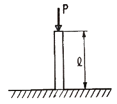
- 0.72
- 0.82
- 0.92
- 1.02
(정답률: 알수없음)
2과목: 기계열역학
21. 온도가 20℃, 압력은 100kPa인 공기 1kg을 정압과정으로 가열 팽창시켜 체적을 5배로 할 때 온도는 약 몇 ℃ 가 되는가? (단, 해당 공기는 이상기체이다.)
- 1192℃
- 1242℃
- 1312℃
- 1442℃
(정답률: 알수없음)
22. 압력 1MPa, 온도 50℃인 R-134a의 비체적의 실제 측정값이 0.021796 m3/kg 이었다. 이상기체 방정식을 이용한 이론적인 비체적과 측정값과의 오차(=
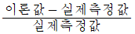
)는 약 몇 % 인가? (단, R-134a 이상기체의 기체상수는 0.0815 kPa·m3/(kg·K) 이다.)- 5.5%
- 12.5%
- 20.8%
- 30.8%
(정답률: 알수없음)
23. 공기 표준 사이클로 작동되는 디젤 사이클의 이론적인 열효율은 약 몇 % 인가? (단, 비열비는 1.4, 압축비는 16이며, 체절비(cut-off ratio)는 1.8 이다.)
- 50.1
- 53.2
- 58.6
- 62.4
(정답률: 알수없음)
24. 그림과 같은 열기관 사이클이 있을 때 실제 가능한 공급열량(QH)과 일량(W)은 얼마인가? (단, QL은 방열열량이다.)
- QH = 100 kJ, W = 80 kJ
- QH = 110 kJ, W = 80 kJ
- QH = 100 kJ, W = 90 kJ
- QH = 110 kJ, W = 90 kJ
(정답률: 알수없음)
25. 다음 압력값 중에서 표준대기압(1 atm)과 차이(절대값)가 가장 큰 압력은?
- 1 MPa
- 100 kPa
- 1 bar
- 100 hPa
(정답률: 알수없음)
26. 어떤 기체 동력장치가 이상적인 브레이턴 사이클로 다음과 같이 작동할 때 이 사이클의 열효율은 약 몇 % 인가? (단, 온도(T)-엔트로피(s) 선도에서 T1 = 30℃, T2 = 200℃, T3 = 1060℃, T4 = 160℃ 이다.)
- 81%
- 85%
- 89%
- 76%
(정답률: 알수없음)
27. 어떤 물질 1000kg이 있고 부피는 1.404m3 이다. 이 물질의 엔탈피가 1344.8 kJ/kg 이고 압력이 9MPa 이라면 물질의 내부에너지는 약 몇 kJ/kg 인가?
- 1332
- 1284
- 1048
- 875
(정답률: 알수없음)
28. 질량이 m으로 동일하고, 온도가 각각 T1, T2(T1 ＞ T2)인 두 개의 금속덩어리가 있다. 이 두 개의 금속덩어리가 서로 접촉되어 온도가 평형상태에 도달하였을 때 엔트로피 변화량(△S)은? (단, 두 금속의 비열은 c로 동일하고, 다른 외부로의 열교환은 전혀 없다.)
(정답률: 알수없음)
29. 3kg의 공기가 400K에서 830K까지 가열될 때 엔트로피 변화량은 약 몇 kJ/K 인가? (단, 이 때 압력은 120kPa에서 480kPa까지 변화하였고, 공기의 정압비열은 1.0⑤ kJ/(kg·K), 공기의 기체상수는 0.287kJ/(kg·K) 이다.)
- 0.584
- 0.719
- 0.842
- 1.007
(정답률: 알수없음)
30. 그림과 같이 작동하는 냉동사이클(압력(P) - 엔탈피(h) 선도)에서 h1 = h4 = 98 kJ/kg, h2 = 246kJ/kg, h3 = 298kJ/kg 일 때 이 냉동사이클의 성능계수(COP)는 약 얼마인가?
- 4.95
- 3.85
- 2.85
- 1.95
(정답률: 알수없음)
31. 0℃ 얼음 1kg이 열을 받아서 100℃ 수증기가 되었다면, 엔트로피 증가량은 약 몇 kJ/K 인가? (단, 얼음의 융해열은 336 kJ/kg이고, 물의 기화열은 2264 kJ/kg이며, 물의 정압비열은 4.186 kJ/(kg·K) 이다.)
- 8.6
- 10.2
- 12.8
- 14.4
(정답률: 알수없음)
32. 그림과 같이 선형 스프링으로 지지되는 피스톤-실린더 장치 내부에 있는 기체를 가열하여 기체의 체적이 V1에서 V2로 증가하였고, 압력은 P1에서 P2로 변화하였다. 이때 기체가 피스톤에 행한 일을 옳게 나타낸 식은? (단, 실린더와 피스톤 사이에 마찰은 무시하며 실린더 내부의 압력(P)은 실린더 내부 부피(V)와 선형관계(P=aV, a는 상수)에 있다고 본다.)
(정답률: 알수없음)
33. 피스톤-실린더 내부에 존재하는 온도 150℃, 압력 0.5MPa의 공기 0.2kg은 압력이 일정한 과정에서 원래 체적의 2배로 늘어난다. 이 과정에서의 일은 약 몇 kJ 인가? (단, 공기의 기체상수가 0.287 kJ/(kg·K)인 이상기체로 가정한다.)
- 12.3
- 16.5
- 20.5
- 24.3
(정답률: 알수없음)
34. 밀폐 시스템에서 가역정압과정이 발생할 때 다음 중 옳은 것은? (단, U는 내부에너지, Q는 열량, H는 엔탈피, S는 엔트로피, W는 일량을 나타낸다.)
- dH = dQ
- dU = dQ
- dS = dQ
- dW = dQ
(정답률: 알수없음)
35. 시간당 380000kg의 물을 공급하여 수증기를 생산하는 보일러가 있다. 이 보일러에 공급하는 물의 비에탈피는 830 kJ/kg이고, 생산되는 수증기의 비엔탈피는 3230 kJ/kg이라고 할 때, 발열량이 kJ/kg 인 석탄을 시간당 34000kg씩 보일러에 공급한다면 이 보일러에 효율은 약 몇 % 인가?
- 66.9%
- 71.5%
- 77.3%
- 83.8%
(정답률: 알수없음)
36. 밀폐 시스템에서 압력(P)이 아래와 같이 체적(V)에 따라 변한다고 할 때 체적이 0.1m3에서 0.3m3로 변하는 동안 이 시스템이 한 일은 약 몇 J 인가? (단, P의 단위는 kPa, V의 단위는 m3 이다.)
- 200
- 400
- 800
- 1600
(정답률: 알수없음)
37. 출력 10000kW 의 터빈 플랜트의 시간당 연료소비량이 5000kg/h 이다. 이 플랜트의 열효율은 약 몇 % 인가? (단, 연료의 발열량은 33440kJ/kg 이다.)
- 25.4%
- 21.5%
- 10.9%
- 40.8%
(정답률: 알수없음)
38. 이상적인 증기 압축 냉동 사이클의 과정은?
- 정적방열과정→등엔트로피 압축과정→정적증발과정→등엔탈피 팽창과정
- 정압방열과정→등엔트로피 압축과정→정압증발과정→등엔탈피 팽창과정
- 정적증발과정→등엔트로피 압축과정→정적방열과정→등엔탈피 팽창과정
- 정압증발과정→등엔트로피 압축과정→정압방열과정→등엔탈피 팽창과정
(정답률: 알수없음)
39. 열교환기를 흐름 배열(flow arrangement) 에 따라 분류할 때 그림과 같은 형식은?
- 평행류
- 대향류
- 병행류
- 직교류
(정답률: 알수없음)
40. -15℃와 75℃의 열원 사이에서 작동하는 카르노 사이클 열펌프의 난방 성능계수는 얼마인가?
- 2.87
- 3.87
- 6.16
- 7.16
(정답률: 알수없음)
3과목: 기계유체역학
41. 다음 중 무차원수가 되는 것은? (단, ρ : 밀도, μ : 점성계수, F : 힘, Q : 부피유량, V : 속도, P : 동력, D : 지름, L : 길이 이다.)
(정답률: 알수없음)
42. 지름 20cm인 구의 주위에 물이 2m/s의 속도로 흐르고 있다. 이 때 구의 항력계수가 0.2 라고 할 때 구에 작용하는 항력은 약 몇 N 인가?
- 12.6
- 204
- 0.21
- 25.1
(정답률: 알수없음)
43. 물의 체적탄성계수가 2×109 Pa 일 때 물의 체적을 4% 감소시키려면 약 몇 MPa 의 압력을 가해야 하는가?
- 40
- 80
- 60
- 120
(정답률: 알수없음)
44. 손실수두(KL)가 15인 밸브가 파이프에 설치되어 있다. 이 파이프에 물이 3m/s의 속도로 흐르고 있다면, 밸브에 의한 손실수두는 약 몇 m 인가?
- 67.8
- 22.3
- 6.89
- 11.26
(정답률: 알수없음)
45. 공기가 게이지 압력을 2.06 bar의 상태로 지름이 0.15m인 관속을 흐르고 있다. 이 때 대기압은 1.03bar 이고 공기 유속이 4m/s 라면 질량유량(mass flow rate)은 약 몇 kg/s 인가? (단, 공기의 온도는 37℃이고, 기체상수는 287.1 J/(kg·K)이다.)
- 0.245
- 2.17
- 0.026
- 32.4
(정답률: 알수없음)
46. 남극 바다에 비중이 0.917인 해빙이 떠 있다. 해빙의 수면 위로 나와 있는 체적이 40m3 일 때 해빙의 전체중량은 약 몇 kN 인가? (단, 바닷물의 비중은 1.025 이다.)
- 2487
- 2769
- 3138
- 3414
(정답률: 알수없음)
47. 그림과 같은 시차액주계에서 A, B점의 압력차 PA - PB는? (단, γ1, γ2, γ3는 각 액체의 비중량이다.)
- γ3h3 - γ1h1 + γ2h2
- γ1h1 + γ2h2 - γ3h3
- γ1h1 - γ2h2 + γ3h3
- γ3h3 - γ1h1 - γ2h2
(정답률: 알수없음)
48. 넓은 평판과 나란한 방향으로 흐르는 유체의 속도 u[m/s]는 평판 벽으로부터의 수직거리 y[m] 만의 함수로 아래와 같이 주어진다. 유체의 점성계수가 1.8×10-5 kg/(m·s) 이라면 벽면에서의 전단응력은 약 몇 N/m2 인가?
- 1.8×10-5
- 3.6×10-5
- 1.8×10-3
- 3.6×10-3
(정답률: 알수없음)
49. 길이가 50m인 배가 8m/s의 속도로 진행하는 경우에 대해 모형 배를 이용하여 조파저항에 관한 실험을 하고자 한다. 모형 배의 길이가 2m 이면 모형 배의 속도는 약 몇 m/s로 하여야 하는가?
- 1.60
- 1.82
- 2.14
- 2.30
(정답률: 알수없음)
50. 파이프 내의 유동에서 속도함수 V가 파이프 중심에서 반지름방향으로의 거리 r에 대한 함수로 다음과 같이 나타날 때 이에 대한 운동에너지 계수(또는 운동에너지 수정계수, kinetic energy coefficient) α는 약 얼마인가? (단, V0는 파이프 중심에서의 속도, Vm은 파이프 내의 평균 속도, A는 유동 단면, R은 파이프 안쪽 반지름이고, 유속 방정식과 운동에너지 계수 관련 식은 아래와 같다.)
- 1.01
- 1.03
- 1.08
- 1.12
(정답률: 알수없음)
51. 다음 중 점성계수(viscosity)의 차원을 옳게 나타낸 것은? (단, M은 질량, L은 길이, T는 시간이다.)
- MLT
- ML-1T-1
- MLT-2
- ML-2T-2
(정답률: 알수없음)
52. 자동차의 브레이크 시스템의 유압장치에 설치된 피스톤과 실린더 사이의 환형 틈새 사이를 통한 누설유동은 두 개의 무한 평판 사이의 비압축성, 뉴턴유체의 층류유동으로 가정할 수 있다. 실린더 내 피스톤의 고압측과 저압측의 압력차를 2배로 늘렸을 때, 작동유체의 누설유량은 몇 배가 될 것인가?
- 2배
- 4배
- 8배
- 16배
(정답률: 알수없음)
53. 그림과 같이 폭이 3m인 수문 AB가 받는 수평성분 FH와 수직성분 FV는 각각 약 몇 N 인가?
- FH = 24400, FV = 46181
- FH = 58800, FV = 46181
- FH = 58800, FV = 92362
- FH = 24400, FV = 92362
(정답률: 알수없음)
54. 그림과 같이 속도 V인 유체가 곡면에 부딪혀 θ의 각도로 유동방향이 바뀌어 같은 속도로 분출된다. 이때 유체가 곡면에 가하는 힘의 크기를 θ에 대한 함수로 옳게 나타낸 것은? (단, 유동단면적은 일정하고, θ의 각도는 0° ≤ θ ≤ 180° 이내에 있다고 가정한다. 또한 Q는 체적 유량, ρ는 유체밀도이다.)
(정답률: 알수없음)
55. 극좌표계(r, θ)로 표현되는 2차원 포텐셜유동에서 속도포텐셜(velocity potential, ø)이 다음과 같을 때 유동함수(stream function, )로 가장 적절한 것은? (단, A, B, C는 상수이다.)
(정답률: 알수없음)
56. 그림과 같은 피토관의 액주계 눈금이 h = 150mm 이고 관속의 물이 6.09 m/s로 흐르고 있다면 액주계 액체의 비중은 얼마인가?
- 8.6
- 10.8
- 12.1
- 13.6
(정답률: 알수없음)
57. 원관 내의 완전층류유동에 관한 설명으로 옳지 않은 것은?
- 관 마찰계수는 Reynolds수에 반비례한다.
- 마찰계수는 벽면의 상대조도에 무관하다.
- 유속은 관 중심을 기준으로 포물선 분포를 보인다.
- 관 중심에서의 유속은 전체 평균 유속의 √2 배이다.
(정답률: 알수없음)
58. 정지된 물속의 작은 모래알이 낙하하는 경우 Stokes Flow(스토크스 유동)가 나타날 수 있는데, 이 유동의 특징은 무엇인가?
- 압축성 유동
- 저속 유동
- 비점성 유동
- 고속 유동
(정답률: 알수없음)
59. 정상 2차원 속도장 내의 한 점(2, 3)에서 유선의 기울기 는?
(정답률: 알수없음)
60. 그림과 같이 큰 탱크의 수면으로부터 h(m) 아래에 파이프를 연결하여 액체를 배출하고자 한다. 마찰손실을 무시한다고 가정할 때 파이프를 통해서 분출되는 물의 속도(가)를 v라고 할 경우, 같은 조건에서의 오일(비중 0.9) 탱크에서 분출되는 속도(나)는?
- 0.81v
- 0.9v
- v
- 1.1v
(정답률: 알수없음)
4과목: 기계재료 및 유압기기
61. 피로 한도에 대한 설명 중 틀린 것은?
- 지름이 크면 피로 한도는 작아진다.
- 노치가 있는 시험편의 피로 한도는 작다.
- 표면이 거친 것이 고운 것보다 피로 한도가 높아진다.
- 노치가 없을 때와 있을 때의 피로 한도비를 노치계수라 한다.
(정답률: 알수없음)
62. 알루미늄 합금 중 개량처리(modification)한 Al-Si 합금은?
- 라우탈
- 실루민
- 두랄루민
- 하이드로날륨
(정답률: 알수없음)
63. 서브제로(sub-zero)처리에 관한 설명으로 틀린 것은?
- 내마모성 및 내피로성이 감소한다.
- 잔류오스테나이트를 마텐자이트화 한다.
- 담금질을 한 강의 조직이 안정화 된다.
- 시효변화가 적으며 부품의 치수 및 형상이 안정된다.
(정답률: 알수없음)
64. 플라스틱의 성형 가공성을 좋게 하는 방법이 아닌 것은?
- 가공온도를 높여준다.
- 폴리머의 중합도를 내린다.
- 성형기의 표면 미끄럼 정도를 좋게 한다.
- 폴리머의 극성을 높게 하여 분자간 응집력을 크게 한다.
(정답률: 알수없음)
65. 5~20%의 Zn의 황동을 말하며, 강도는 낮으나 전연성이 좋고 색깔이 금색에 가까우므로, 모조금이나 판 및 선 등에 사용되는 구리 합금은?
- 톰백
- 문쯔메탈
- 네이벌황동
- 애드리럴티 메탈
(정답률: 알수없음)
66. 고망간(Mn)강에 관한 설명으로 틀린 것은?
- 오스테나이트 조직을 갖는다.
- 광석·암석의 파쇄기 부품 등에 사용된다.
- 열처리에 수인법(water toughening)이 이용된다.
- 열전도성이 좋고 팽창계수가 작아 열변형을 일으키지 않는다.
(정답률: 알수없음)
67. 강의 표면강화처리에서 침탄법과 비교하였을 때 질화법의 특징으로 틀린 것은?
- 침탄 한 것보다 경도가 높다.
- 질화 후에 열처리가 필요 없다.
- 침탄법보다 경화에 의한 변형이 적다.
- 침탄법보다 단시간 내에 같은 경화 깊이를 얻을 수 있다.
(정답률: 알수없음)
68. 아공정주철의 탄소함유량은 약 몇 % 인가?
- 약 0.025~0.80%C
- 약 0.80~2.0%C
- 약 2.0~4.3%C
- 약 4.3~6.67%C
(정답률: 알수없음)
69. 순철(α-Fe)의 자기변태 온도는 약 몇 ℃ 인가?
- 210℃
- 768℃
- 910℃
- 1410℃
(정답률: 알수없음)
70. 고속도공구강에 대한 설명으로 틀린 것은?
- 2차 경화 현상을 나타낸다.
- 500~600℃까지 가열하여도 뜨임에 의해 연화되지 않는다.
- SKH 2는 Mo가 함유되어 있는 Mo계 고속도공구강 강재이다.
- 내마모성 및 인성을 가지므로 바이트, 드릴 등의 절삭공구에 사용된다.
(정답률: 알수없음)
71. 다음 기호에 대한 설명으로 틀린 것은?
- 유압 모터이다.
- 4방향 유동이다.
- 가변 용량형이다.
- 외부 드레인이 있다.
(정답률: 알수없음)
72. 아래 파일럿 전환 밸브의 포트수, 위치수로 옳은 것은?
- 2포트 4위치
- 2포트 5위치
- 5포트 2위치
- 6포트 2위치
(정답률: 알수없음)
73. 두 개의 유입 관로의 압력에 관계없이 정해진 출구 유량이 유지되도록 합류되는 밸브는?
- 집류 밸브
- 셔틀 밸브
- 적층 밸브
- 프리플 밸브
(정답률: 알수없음)
74. 속도 제어 회로의 종류가 아닌 것은?
- 미터 인 회로
- 미터 아웃 회로
- 블리드 오프 회로
- 로크(로킹) 회로
(정답률: 알수없음)
75. 스트레이너에 대한 설명으로 적절하지 않은 것은?
- 스트레이너의 연결부는 오일 탱크의 작동유를 방출하지 않아도 분리가 가능하도록 하여야 한다.
- 스트레이너의 여과 능력은 펌프 흡입량의 1.2배 이하의 용적을 가져야 한다.
- 스트레이너가 막히면 펌프가 규정 유량을 토출하지 못하거나 소음을 발생시킬 수 있다.
- 스트레이너의 보수는 오일을 교환할 때마다 완전히 청소하고 주기적으로 여과재를 분리하여 손질하는 것이 좋다.
(정답률: 알수없음)
76. 일반적인 유압 장치에 대한 설명과 특징으로 가장 적절하지 않은 것은?
- 유압 장치 자체의 자동 제어에 제약이 있을 수 있으나 전기, 전자 부품과 조합하여 사용하면 그 효과를 증대시킬 수 있다.
- 힘의 증폭 방법이 같은 크기의 기계적 장치(기어, 체인 등)에 비해 간단하여 크게 증폭 시킬 수 있으며 그 예로 소형 유압잭, 거대한 건설 기계 등이 있다.
- 인화의 위험과 이물질에 의한 고장 우려가 있다.
- 점도의 변화에 따른 출력 변화가 없다.
(정답률: 알수없음)
77. 유압·공기압 도면 기호(KS B 0⑤4)에 따른 기호에서 필터, 드레인 관로를 나타내는 선의 명칭으로 옳은 것은?
- 파선
- 실선
- 1점 이중 쇄선
- 복선
(정답률: 알수없음)
78. 일반적인 용적형 펌프의 종류가 아닌 것은?
- 기어 펌프
- 베인 펌프
- 터빈 펌프
- 피스톤(플런저) 펌프
(정답률: 알수없음)
79. 유압 작동유의 첨가제로 적절하지 않은 것은?
- 산화방지제
- 소포제 및 방청제
- 점도지수 강하제
- 유동점 강하제
(정답률: 알수없음)
80. 다음 중 유압을 이용한 기기(기계)의 장점이 아닌 것은?
- 자동 제어가 가능하다.
- 유압 에너지원을 축적할 수 있다.
- 힘과 속도를 무단으로 조절할 수 있다.
- 온도 변화에 대해 안정적이고 고압에서 누유의 위험이 없다.
(정답률: 알수없음)
5과목: 기계제작법 및 기계동력학
81. 질량 m의 공이 h의 높이에서 자유 낙하아여 콘크리트 바닥과 충돌하였다. 공과 바닥사이의 반발계수를 e라고 할 때, 공이 첫 번째 튀어오른 높이는?
- √2 eh
- eh
- 2eh
- e2h
(정답률: 알수없음)
82. 조화진동 x1 = 4cosωt와 x2 = 5sinωt의 합성 진동 진폭은 약 얼마인가?
- 10.2
- 8.2
- 6.4
- 4.4
(정답률: 알수없음)
83. 지표면에서 공을 초기속도로 v0로 수직 상방으로 던졌다. 공이 제자리로 돌아올 때까지 걸린 시간(t)은? (단, g는 중력가속도이고, 공기저항은 무시한다.)
(정답률: 알수없음)
84. 10kg의 상자가 경사면 방향으로 초기 속도가 15m/s인 상태로 올라갔다. 상자와 경사면 사이의 운동 마찰계수가 0.15 일 때 상자가 올라갈 수 있는 최대거리 x 는 약 몇 m 인가?
- 13.7
- 15.7
- 18.2
- 21.2
(정답률: 알수없음)
85. 그림과 같이 스프링에 질량 m을 달고 상하로 진동시킬 때 주기와 질량(m)과의 관계는? (단, k는 스프링상수이다.)
- 주기는 √m 에 반비례한다.
- 주기는 √m 에 비례한다.
- 주기는 m2 에 반비례한다.
- 주기는 m2 에 비례한다.
(정답률: 알수없음)
86. 길이가 1m이고 질량이 5kg인 균일한 막대가 그림과 같이 지지되어 있다. A점은 힌지로 되어 있어 B점에 연결된 줄이 갑자기 끊어졌을 때 막대는 자유로이 회전한다. 여기서 막대가 수직 위치에 도달한 순간 각속도는 약 몇 rad/s 인가?
- 2.62
- 3.43
- 4.61
- 5.42
(정답률: 알수없음)
87. 정지상태의 비행기가 100m의 직선 활주로를 달려서 이륙속도 360km/h에 도달하려고 한다. 가속도의 크기가 일정하다고 가정하면 비행기의 가속도는 약 몇 m/s2 인가?
- 10
- 20
- 50
- 100
(정답률: 알수없음)
88. 비감쇠자유진동수 ωn와 감쇠자유진동수 ωd 사이의 관계를 나타낸 식은? (단, 는 감쇠비를 나타낸다.)
(정답률: 알수없음)
89. 기계진동의 전달율(transmissibility ratio)을 1 이하로 조정하기 위해서는 진동수 비(ω/ωn)를 얼마로 하면 되는가?
- √2 이상으로 한다.
- √2 이하로 한다.
- 2 이상으로 한다.
- 2 이하로 한다.
(정답률: 알수없음)
90. 그림과 같이 막대 AB가 양쪽 벽면을 따라 움직인다. A가 8m/s의 일정한 속도로 오른쪽으로 이동한다고 할 때 x=2m 인 위치에서 B의 가속도의 크기는 약 몇 m/s2 인가?
- 16.6 m/s2
- 12.4 m/s2
- 14.7 m/s2
- 10.3 m/s2
(정답률: 알수없음)
91. 주철과 같이 메진 재료를 저속으로 절삭할 때 일반적인 칩의 모양은?
- 경작형
- 균열형
- 유동형
- 전단형
(정답률: 알수없음)
92. 펀치와 다이를 프레스에 설치하여 판금 재료로부터 목적하는 형상의 제품을 뽑아내는 전단 가공은?
- 스웨이징
- 엠보싱
- 블랭킹
- 브로칭
(정답률: 알수없음)
93. 래핑 다듬질에 대한 특징 중 틀린 것은?
- 게이지류나 광학렌즈의 표면 다듬질에 사용된다.
- 가공면에 랩제가 잔류하여 표면의 부식과 마모 촉진을 막아준다.
- 평면도, 진원도, 직선도 등의 이상적인 기하학적 형상을 얻을 수 있다.
- 가공면의 윤활성 및 내마모성이 좋아진다.
(정답률: 알수없음)
94. 밀링가공에서 지름이 50mm인 밀링커터를 사용하여 60m/min의 절삭속도로 절삭하는 경우 밀링커터의 회전수는 약 몇 rpm 인가?
- 284
- 382
- 468
- 681
(정답률: 알수없음)
95. 다이에 아연, 납, 주석 등의 연질금속을 넣고 제품 형상의 펀치로 타격을 가하여 길이가 짧은 치약튜브, 약품튜브 등을 제작하는 압축 방법은?
- 간접 압출
- 열간 압출
- 직접 압출
- 충격 압출
(정답률: 알수없음)
96. 300mm×500mm 인 주철 주무를 만들 때, 필요한 주입 추는 약 몇 kg 인가? (단, 쇳물 아궁이 높이가 120mm, 주물 밀도는 7200 kg/m3 이다.)
- 129.6
- 149.6
- 169.6
- 189.6
(정답률: 알수없음)
97. 초음파 가공에 대한 설명으로 틀린 것은?
- 가공물 표면에서의 증발 현상을 이용한다.
- 전기 에너지를 기계적 진동 에너지로 변화시켜 가공한다.
- 혼의 재료는 황동, 연강 등을 사용한다.
- 입자는 가공물에 연속적인 해머 작용으로 가공한다.
(정답률: 알수없음)
98. 다음 중 나사의 주요 측정 요소가 아닌 것은?
- 피치
- 유효지름
- 나사의 길이
- 나사산의 각도
(정답률: 알수없음)
99. 전기저항용접과 관계되는 법칙은?
- 줄(Joule)의 법칙
- 뉴턴의 법칙
- 암페어의 법칙
- 플레밍의 법칙
(정답률: 알수없음)
100. 강재의 표면에 Si를 침투시키는 방법으로 내식성, 내열성 등을 향상시키는 방법은?
- 브로나이징
- 칼로라이징
- 크로마이징
- 실리코나이징
(정답률: 알수없음)